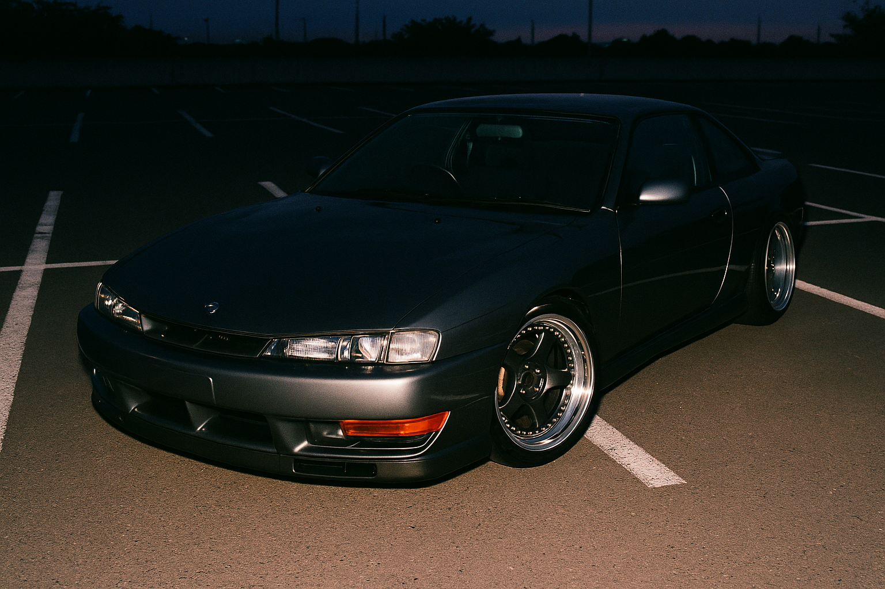

Featured Build · July

Osaka Rules,
London Roads
Daichi Sato's S14 crossed a continent and eight years of spec sheets. Now the old parts fund the new ones — every superseded piece is live on the market.
The car left Osaka in 2018 as a tidy, mostly stock K's. Daichi shipped it before he shipped himself, which tells you where his priorities sit. The first London winter nearly ended the relationship — SR20s do not love salt — and the rebuild that followed set the tone for everything since: do it once, do it properly, sell what comes off.
The current spec is the third major iteration. The TD06-20G that carried the car through two seasons of Sunday-morning runs has just come off in favour of a modern ball-bearing single, which means the old kit — tight, honest, documented — is on the market this week along with the radiator and rear arms it worked beside. Nothing in Daichi's garage gathers dust; the market is the other half of the workshop.
Ask him what the car is for and you get a shrug: "Driving. That's the whole answer." The spec box agrees — nothing on this car exists for a photo. Which is, of course, exactly why it photographs so well.
Parts From This Build · For Sale Now
The Old Spec, Priced
More Builds